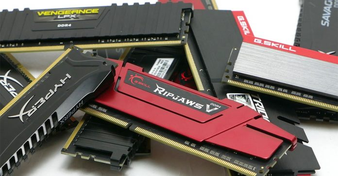

RAM

Nella memoria RAM vengono copiati (caricati) i programmi che la CPU deve eseguire. Una volta chiuso il programma, le modifiche effettuate, se non opportunamente salvate sul disco rigido o su altra memoria non volatile, verranno perse. Per le sue caratteristiche, la RAM viene utilizzata come memoria primaria nei computer più comuni. Inoltre, si può utilizzare una porzione di RAM come RAM disk, ovvero trattarla come se fosse memoria secondaria, col vantaggio di avere prestazioni in lettura e scrittura enormemente più elevate, con tempi di accesso significativamente migliori. Il tipo di memoria ad accesso diretto più comune attualmente è a stato solido, a lettura-scrittura e volatile, ma rientrano nel tipo di memoria ad accesso casuale la maggior parte dei tipi di ROM (memoria a sola lettura), la NOR Flash (un tipo di memoria flash), oltre a vari tipi di memorie informatiche utilizzate ai primordi dell'informatica e oggi non più utilizzate come ad esempio la memoria a nucleo magnetico. L'acronimo RAM (non il termine "memoria ad accesso diretto") ha anche una seconda accezione più ristretta, ma attualmente più diffusa, che identifica le schede fisiche che vengono installate negli odierni computer (vedi moduli DIMM, SIMM, SO-DIMM). Per testare i moduli di memoria si può utilizzare il software Memtest86.